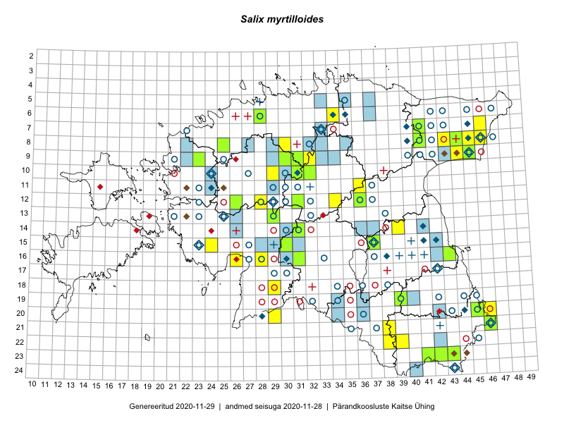

Salix myrtilloides — mustikpaju
Kaardile koondatud taksonid: Salix myrtilloides L. (88)

Kaart põhineb 88 kirjel, neist:
vaatlusi 57
eksemplare 31
Kaasaegsed1 leiukohad asuvad 46 ruudus.
Andmed “Eesti taimede levikuatlasest”,2 sulgudes ruutude arv:3
● 1971–2005 (39)
○ 1921–1970 (75)
△ kuni 1920 (15)
+ hävinud (0)
? kaheldav (0)
Lisaruudud teistest andmebaasidest:4
ELF: 2006– . . . (52)
PKÜ: 2006– . . . (0)
ELF: 1971–2005 (14)
PKÜ: 1997–2005 (3)
| Ruut | Vaatleja(d) | Vaatlusaeg | Kirje PlutoFis |
|---|---|---|---|
| 09-31 | Ott Luuk, Toivo Sepp | 2015-07-29 | ruut/ala: Salix myrtilloides L. |
| 07-41 | Tiit Hallikma, Toomas Kukk | 2015-07-23 | ruut/ala: Salix myrtilloides L. |
| 15-24 | Indrek Tammekänd, Liisa Rennel, Agu Leivits, Hannes Pehlak, Irja Tammekänd | 2015-04-27 | ruut/ala: Salix myrtilloides L. |
| 16-43 | Thea Kull, Meeli Mesipuu | 2015-08-12 | ruut/ala: Salix myrtilloides L. |
| 22-39 | Eeva-Maria Jeletsky, Tarmo Niitla | 2015-07-24 | ruut/ala: Salix myrtilloides L. |
| 10-32 | Ott Luuk | 2015-08-03 | ruut/ala: Salix myrtilloides L. |
| 21-38 | Eeva-Maria Jeletsky, Tarmo Niitla | 2015-08-12 | ruut/ala: Salix myrtilloides L. |
| 09-32 | Ott Luuk, Toivo Sepp | 2015-08-18 | ruut/ala: Salix myrtilloides L. |
| 14-39 | Erkki Otsman, Sergei Smirnov | 2015-07-21 | ruut/ala: Salix myrtilloides L. |
| 13-29 | Meeli Mesipuu, Timo Luhamäe | 2015-06-10 | ruut/ala: Salix myrtilloides L. |
| 20-46 | Kersti Püssa, Rein Kalamees | 2015-07-16 | ruut/ala: Salix myrtilloides L. |
| 23-43 | Meeli Mesipuu, Timo Luhamäe | 2016-06-15 | ruut/ala: Salix myrtilloides L. |
| 16-28 | Indrek Tammekänd | 2016-06-03 | ruut/ala: Salix myrtilloides L. |
| 07-46 | Indrek Tammekänd | 2016-05-30 | ruut/ala: Salix myrtilloides L. |
| 08-46 | Indrek Tammekänd | 2016-05-28 | ruut/ala: Salix myrtilloides L. |
| 22-38 | Vivika Väli, Kaili Kattai | 2015-08-10 | ruut/ala: Salix myrtilloides L. |
| 21-46 | Timo Luhamäe, Meeli Mesipuu | 2016-06-14 | ruut/ala: Salix myrtilloides L. |
| 09-30 | Ott Luuk, Peedu Saar | 2016-09-06 | ruut/ala: Salix myrtilloides L. |
| 10-31 | Toivo Sepp, Peedu Saar | 2016-07-22 | ruut/ala: Salix myrtilloides L. |
| 12-26 | Mari Reitalu, Eerik Leibak | 2017-08-09 | ruut/ala: Salix myrtilloides L. |
| 12-28 | Indrek Tammekänd | 2014-09-17 | ruut/ala: Salix myrtilloides L. |
| 06-34 | Peedu Saar, Ott Luuk | 2017-07-19 | ruut/ala: Salix myrtilloides L. |
| 15-37 | Peedu Saar | 2017-08-03 | ruut/ala: Salix myrtilloides L. |
| 12-34 | Ott Luuk, Thea Kull | 2017-08-03 | ruut/ala: Salix myrtilloides L. |
| 10-29 | Indrek Tammekänd, Janno Tammekänd, Üllar Tammekänd, Andreas Tammekänd, Tene Johanson | 2016-08-20 | ruut/ala: Salix myrtilloides L. |
| 08-41 | Meeli Mesipuu, Ott Luuk | 2015-07-20 | punkt: Salix myrtilloides L. |
| 13-29 | Timo Luhamäe, Meeli Mesipuu | 2015-06-10 | punkt: Salix myrtilloides L. |
| 16-43 | Meeli Mesipuu, Thea Kull | 2015-08-12 | punkt: Salix myrtilloides L. |
| 21-46 | Meeli Mesipuu, Timo Luhamäe | 2016-06-14 | punkt: Salix myrtilloides L. |
| 18-29 | Indrek Tammekänd, Tuuli Teppo | 2016-06-06 | punkt: Salix myrtilloides L. |
| 20-29 | Indrek Tammekänd | 2016-06-22 | punkt: Salix myrtilloides L. |
| 12-34 | Thea Kull, Ott Luuk | 2017-08-03 | punkt: Salix myrtilloides L. |
| 15-37 | Peedu Saar | 2017-08-14 | punkt: Salix myrtilloides L. |
| 15-37 | Peedu Saar | 2017-08-04 | punkt: Salix myrtilloides L. |
| 20-29 | Indrek Tammekänd | 2016-06-22 | ruut/ala: Salix myrtilloides L. |
| 15-37 | Thea Kull, Ott Luuk | 2017-08-04 | punkt: Salix myrtilloides L. |
| 06-34 | Ott Luuk, Peedu Saar | 2017-07-19 | punkt: Salix myrtilloides L. |
| 10-31 | Ott Luuk | 2018-08-01 | ruut/ala: Salix myrtilloides L. |
| 10-31 | Ott Luuk | 2018-08-01 | punkt: Salix myrtilloides L. |
| 10-31 | Ott Luuk | 2018-08-01 | punkt: Salix myrtilloides L. |
| 08-45 | Peedu Saar | 2018-07-17 | punkt: Salix myrtilloides L. |
| 09-45 | Peedu Saar | 2018-07-19 | punkt: Salix myrtilloides L. |
| 09-45 | Peedu Saar | 2018-07-19 | ruut/ala: Salix myrtilloides L. |
| 13-29 | Mari Reitalu, Thea Kull | 2019-08-28 | ruut/ala: Salix myrtilloides L. |
| 20-46 | Peedu Saar, Ott Luuk | 2019-09-24 | ruut/ala: Salix myrtilloides L. |
| 09-44 | Ott Luuk | 2019-09-28 | punkt: Salix myrtilloides L. |
| 09-44 | Ott Luuk | 2019-09-28 | punkt: Salix myrtilloides L. |
| 09-44 | Ott Luuk | 2019-09-28 | ruut/ala: Salix myrtilloides L. |
| 20-46 | Ott Luuk, Peedu Saar | 2019-09-24 | punkt: Salix myrtilloides L. |
| 15-30 | Meeli Mesipuu, Timo Luhamäe | 2019-08-28 | punkt: Salix myrtilloides L. |
| 08-43 | Ott Luuk, Meeli Mesipuu | 2019-09-10 | ruut/ala: Salix myrtilloides L. |
| 14-31 | Ott Luuk, Eerik Leibak | 2019-08-28 | punkt: Salix myrtilloides L. |
| 12-34 | Ott Luuk, Eerik Leibak | 2019-08-27 | punkt: Salix myrtilloides L. |
| 08-30 | Ott Luuk, Toivo Sepp | 2019-08-30 | punkt: Salix myrtilloides L. |
| 16-26 | Vilma Kuusk | 2008 | ruut/ala: Salix myrtilloides L. |
| 11-36 | Indrek Tammekänd, Jaak Tammekänd, Agu Leivits, Meelis Leivits, Alar Soppe, Triin Leetmaa, Margus Pensa | 2018-05-25 | ruut/ala: Salix myrtilloides L. |
| 16-31 | Indrek Tammekänd | 2018-06-04 | ruut/ala: Salix myrtilloides L. |
| 21-46 | Toomas Kukk | 2008-08-11 | TAA0099417: Salix myrtilloides L. |
| 21-46 | Toomas Kukk | 2008-08-11 | TAA0099418: Salix myrtilloides L. |
| 06-28 | Toomas Kukk | 2006-08-21 | TAA0099421: Salix myrtilloides L. |
| 23-42 | Toomas Kukk | 2006-08-13 | TAA0099422: Salix myrtilloides L. |
| 08-44 | Peedu Saar, Liina Oja | 2015-07-20 | TAA0116615: Salix myrtilloides L. |
| 14-31 | Peedu Saar, Liina Oja | 2015-06-10 | TAA0116618: Salix myrtilloides L. |
| 10-31 | Peedu Saar, Toivo Sepp | 2016-07-22 | TAA0133988: Salix myrtilloides L. |
| 07-41 | Toomas Kukk, Tiit Hallikma | 2015-07-23 | TAA0134220: Salix myrtilloides L. |
| 09-23 | Peedu Saar, Meelis Sepp | 2012-07-10 | TAA0112524: Salix myrtilloides L. |
| 15-37 | Eerik Leibak | 2010-06-09 | TAA0112748: Salix myrtilloides L. |
| 09-30 | Sander Laherand, Toomas Kukk | 2016-07-06 | TAA0133366: Salix myrtilloides L. |
| 23-41 | Ott Luuk | 2016-06-15 | TAA0138948: Salix myrtilloides L. |
| 16-43 | Meeli Mesipuu, Thea Kull | 2017-06-01 | TAA0137509: Salix myrtilloides L. |
| 09-31 | Ott Luuk | 2015-07-29 | TAA0142416: Salix myrtilloides L. |
| 10-32 | Ott Luuk | 2015-08-10 | TAA0142474: Salix myrtilloides L. |
| 13-29 | Meeli Mesipuu, Timo Luhamäe | 2015-06-10 | TAA0143892: Salix myrtilloides L. |
| 12-26 | Mari Reitalu, Eerik Leibak | 2017-08-09 | TAA0143112: Salix myrtilloides L. |
| 09-45 | Eerik Leibak | 2017-06-27 | TAA0142185: Salix myrtilloides L. |
| 23-43 | Timo Luhamäe, Meeli Mesipuu | 2016-06-15 | TAA0144683: Salix myrtilloides L. |
| 15-37 | Meeli Mesipuu | 2017-07-29 | TAA0144256: Salix myrtilloides L. |
| 15-37 | Meeli Mesipuu | 2017-08-22 | TAA0145118: Salix myrtilloides L. |
| 21-46 | Timo Luhamäe, Meeli Mesipuu | 2016-06-14 | TAA0144692: Salix myrtilloides L. |
| 08-41 | Ott Luuk, Meeli Mesipuu | 2015-07-20 | TAA0145546: Salix myrtilloides L. |
| 08-41 | Ott Luuk, Meeli Mesipuu | 2015-07-20 | TAA0145547: Salix myrtilloides L. |
| 10-31 | Ott Luuk | 2018-08-01 | TAA0146021: Salix myrtilloides L. |
| 12-31 | Ott Luuk, Hannes Pehlak | 2015-06-09 | TAA0146027: Salix myrtilloides L. |
| 16-31 | Indrek Tammekänd | 2018-06-05 | TAA0147692: Salix myrtilloides L. |
| 12-36 | Eerik Leibak | 2019-07-11 | TAA0148178: Salix myrtilloides L. |
| 15-30 | Meeli Mesipuu, Timo Luhamäe | 2019-08-28 | TAA0145352: Salix myrtilloides L. |
| 19-39 | Thea Kull | 2019-07-10 | TAA0147914: Salix myrtilloides L. |
| 09-31 | Ott Luuk, Toivo Sepp | 2019-07-25 | TAA0150287: Salix myrtilloides L. |
Kaasaegsed leiukohad (tähistatud värvitud ruutudega) põhinevad peamiselt 2014–2019 välitööandmetel. Väiksemal määral on andmebaasi kantud vanemaid leiuandmeid aastatest 2006–2013.↩︎
Kukk, T., Kull, T., Eesti taimede levikuatlas. Eesti Maaülikool, Põllumajandus- ja Keskkonnainstituut, Tartu, 2005.↩︎
NB! 2005. aasta atlase andmestikus katavad uuemad leiud vanemaid. Näiteks kui liik on ruudus registreeritud 1971–2005, siis pole võimalik öelda, kas ta oli sellest ruudust teada ka enne 1970. aastat. Vana atlase andmetel hävinud ja kaheldavaid leiukohti pole hilisemate (taas)leidude põhjal korrigeeritud.↩︎
Eestimaa Looduse Fondi (ELF) ja Pärandkoosluste Kaitse Ühingu (PKÜ) andmebaasid sisaldavad inventeeritud koosluste kirjeldusi ja liigiloendeid. Neist andmekogudest on kaardile lisatud lisatud vaid need ruudud, millest uue atlase andmekogus taksoni kohta kirjeid veel pole. Kõrvale on jäetud teadaolevalt kaheldavad määrangud. Kaartidel katavad uuema perioodi andmed vanemaid, PKÜ omad ELFi omi. Kattumise tõttu võib kaardil näha olla vähem mingi kategooria ruute kui legendis olev arv näitab. ELFi ja PKÜ andmed ei kajastu hetkel vaatluste tabelis ega ruutude liigiloendites.↩︎